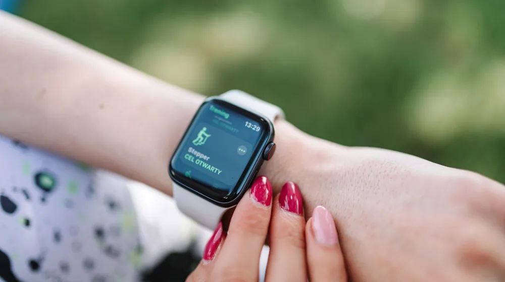

스마트워치 고민 끝! 무료 vs 유료, 나에게 딱 맞는 선택 가이드
사진: MART PRODUCTION / Pexels (무료 이미지, 출처 표기)
무료 스마트워치, 정말 '공짜'일까?

새로운 스마트워치를 구매하려는데, 통신사나 특정 서비스를 통해 '무료'로 제공된다는 광고를 접할 때가 있습니다. 하지만 여기서 말하는 '무료'는 대부분 조건부입니다. 2026년 9월 기준, 무료 스마트워치는 주로 통신사 약정, 특정 요금제 가입, 혹은 신용카드/결합상품 프로모션의 일환으로 제공되는 경우가 많습니다.
겉으로는 추가 비용이 없어 보이지만, 약정 기간 내 해지 시 위약금이 발생하거나, 실제로는 필요 없는 고가의 요금제를 일정 기간 유지해야 하는 등의 의무가 따를 수 있습니다. 이러한 조건들을 꼼꼼히 확인하지 않으면 예상치 못한 비용 부담으로 이어질 수 있으니 주의해야 합니다.
무료 스마트워치 vs 유료 스마트워치: 핵심 기능 비교
무료 스마트워치와 직접 구매하는 유료 스마트워치는 제공되는 기능과 성능에서 분명한 차이를 보입니다. 주로 통신사 등에서 제공하는 무료 모델은 기본적인 알림 기능과 활동량, 심박수 측정 등 핵심 건강 트래킹 기능에 초점을 맞추는 경우가 많습니다.
반면, 유료 스마트워치는 훨씬 더 다양하고 정교한 기능을 제공합니다. 아래 표를 통해 주요 기능들을 비교해보고, 어떤 스마트워치가 자신의 라이프스타일에 더 적합할지 판단해보세요.
가격대가 성능을 결정할까? 주요 스펙 차이
스마트워치의 가격대는 단순히 브랜드 가치뿐만 아니라 내장된 하드웨어 스펙과도 밀접하게 연결됩니다. 유료 스마트워치, 특히 고가 모델들은 더 빠르고 효율적인 프로세서(AP), 더 많은 RAM과 저장 공간을 탑재하여 부드러운 사용자 경험과 다양한 앱 활용을 가능하게 합니다.
디스플레이 품질에서도 차이가 나타납니다. 일반적으로 유료 모델은 AMOLED(능동형 유기 발광 다이오드) 패널을 사용하여 더 선명하고 밝은 화면, 깊은 명암비를 제공하며, Always-On Display 기능도 지원하는 경우가 많습니다. 반면, 보급형이나 무료 증정 모델은 LCD 패널을 사용하여 비용을 절감하는 경우가 있습니다.
배터리 수명 또한 중요한 요소입니다. 고급 모델은 효율적인 전력 관리 기술과 더 큰 용량의 배터리를 탑재하여 며칠간의 사용 시간을 제공하는 반면, 저가형 모델은 하루 정도의 짧은 배터리 수명을 가질 수 있습니다. 방수/방진 등급(IP 등급) 역시 가격대가 올라갈수록 더 높은 기준을 충족하는 경향이 있습니다. 예를 들어, 수영 등 수상 스포츠에 적합한 5ATM 방수 등급은 주로 유료 모델에서 찾아볼 수 있습니다.
나에게 맞는 스마트워치 유형 선택 가이드
자신의 사용 목적과 예산에 맞춰 최적의 스마트워치를 선택하는 것이 중요합니다. 다음 가이드를 참고하여 자신에게 꼭 맞는 유형을 찾아보세요.
- 가성비와 기본 기능 중시 (무료/저가형)
스마트폰 알림 확인, 기본적인 활동량 및 걸음 수 측정 등 핵심 기능만 필요하다면 무료 또는 10만 원 미만의 보급형 모델로 충분합니다. 스마트워치 입문용으로 부담 없이 활용하기 좋습니다. - 고급 건강 관리 및 운동 기록 (중가형/고가형)
정교한 심박수, ECG, 혈중 산소 농도 측정, 수면 분석, 다양한 운동 모드 등 전문적인 건강 관리와 상세한 운동 기록이 필요하다면 30만 원 이상의 유료 모델을 고려하는 것이 좋습니다. 특히 마라톤, 등산 등 아웃도어 활동을 즐긴다면 독립형 GPS 유무를 확인하세요. - 스마트폰 독립성 및 편리한 통화 (LTE 모델)
스마트폰 없이 워치 단독으로 통화, 메시지, 스트리밍 음악 감상 등을 하고 싶다면 LTE(셀룰러) 지원 모델이 필수적입니다. 주로 야외 활동이 잦거나 운동 시 스마트폰을 휴대하고 싶지 않은 사용자에게 적합합니다. 통신사 요금제에 따라 추가 비용이 발생할 수 있습니다. - 디자인 및 브랜드 생태계 (고가형)
패션 아이템으로서의 가치나 특정 브랜드(애플, 삼성 등)의 스마트폰과 완벽한 연동성을 중요하게 생각한다면 해당 브랜드의 플래그십 모델을 선택하는 것이 만족도를 높일 수 있습니다.
스마트워치 구매 전 꼭 확인해야 할 주의사항
스마트워치를 구매하기 전에 몇 가지 중요한 사항을 미리 확인하여 후회 없는 선택을 하시길 바랍니다.
- 스마트폰 호환성: 애플워치는 아이폰에서만, 갤럭시워치는 안드로이드 스마트폰(특히 삼성 갤럭시)에서 최적의 성능을 발휘합니다. 사용 중인 스마트폰 운영체제(iOS 또는 안드로이드)와의 호환성을 반드시 확인하세요.
- 배터리 사용 시간: 하루 한 번 충전이 필요한 모델부터 며칠간 사용 가능한 모델까지 다양합니다. 자신의 라이프스타일에 맞는 배터리 지속 시간을 제공하는지 확인하는 것이 중요합니다.
- A/S 및 사후 지원: 구매 후 발생할 수 있는 문제에 대비하여 제조사의 A/S 정책과 소프트웨어 업데이트 등 사후 지원이 잘 이루어지는지 알아보세요.
- 개인 정보 보호: 스마트워치는 심박수, 활동량 등 민감한 개인 건강 데이터를 수집합니다. 해당 기기 및 서비스의 개인 정보 처리 방침을 확인하여 데이터가 안전하게 관리되는지 확인하는 것이 좋습니다.
- 정확한 정보 확인: 2026년 9월 기준, 스마트워치 시장의 제품 사양, 가격, 프로모션 등은 수시로 변동될 수 있습니다. 특정 모델이나 프로모션에 대한 자세한 정보는 항상 해당 제조사 또는 통신사의 공식 홈페이지에서 다시 한번 확인하시길 권장합니다.
🔗 이 글도 함께 보면 좋아요: 인기 무선 이어폰 비교 구매 가이드: 나에게 맞는 모델 찾기
관련 추천 상품
이 포스팅은 쿠팡 파트너스 활동의 일환으로, 이에 따른 일정액의 수수료를 제공받습니다.